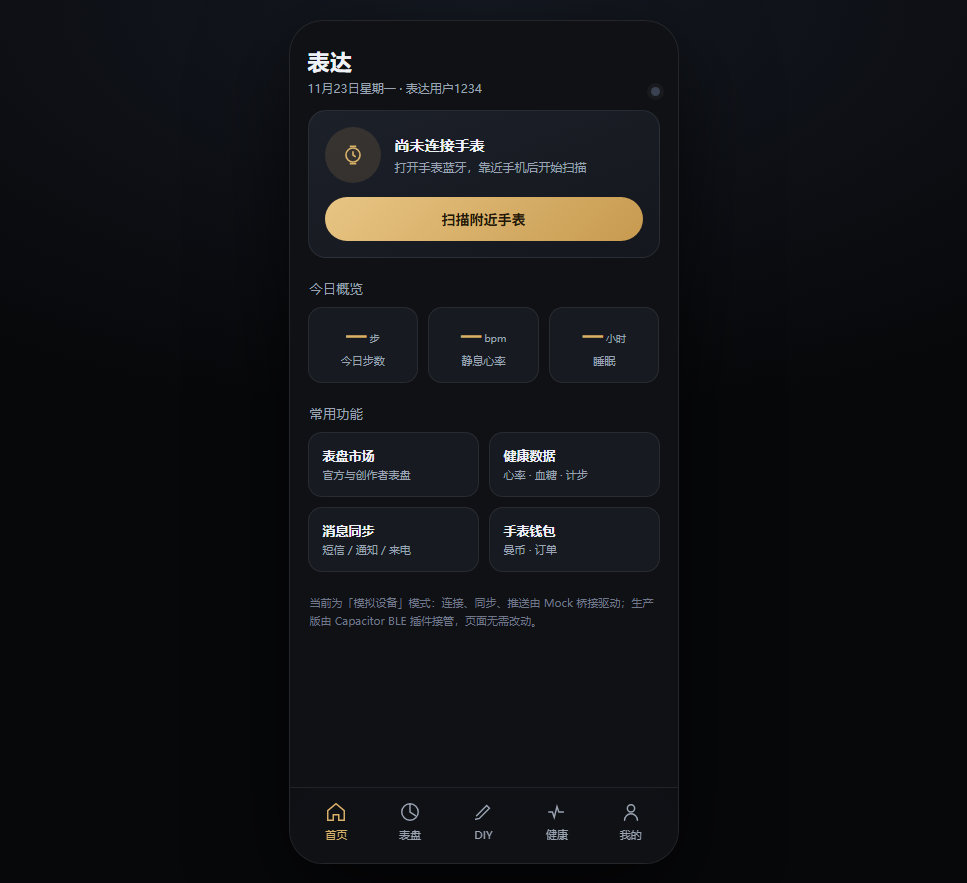
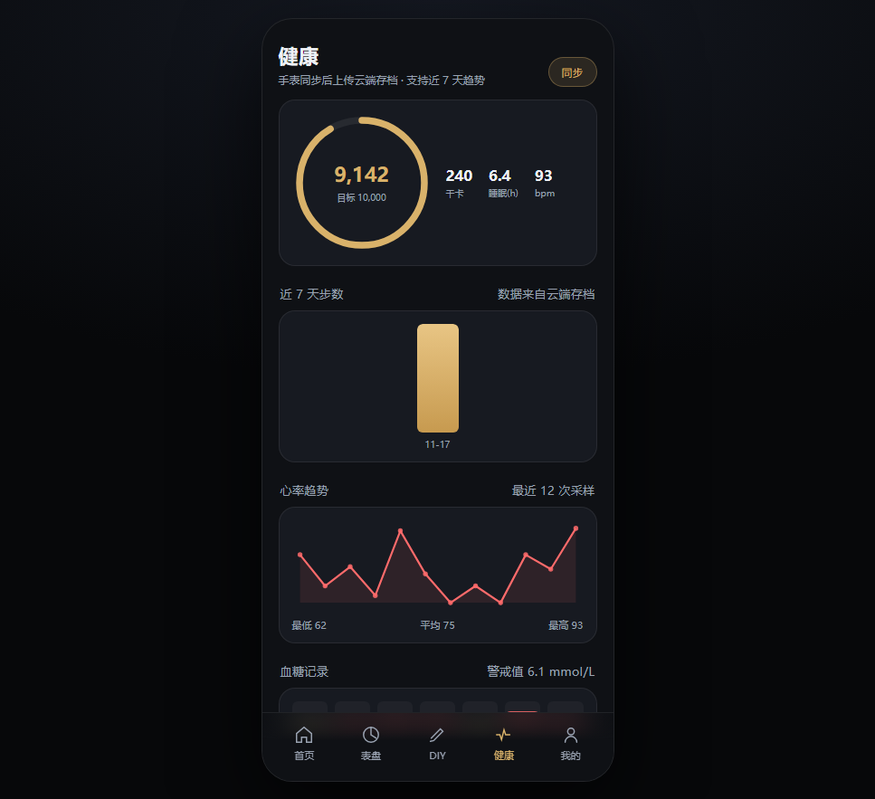
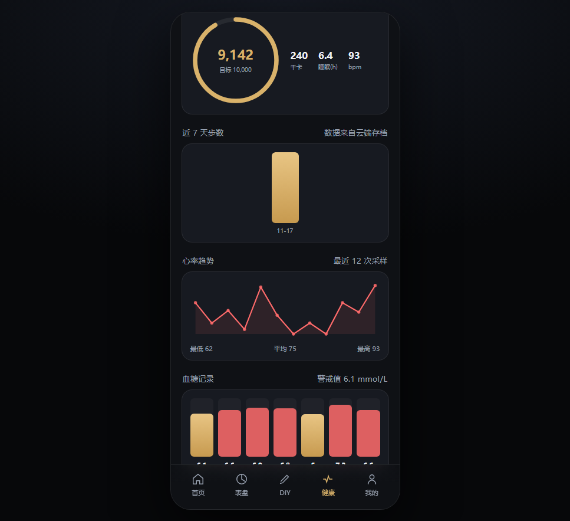
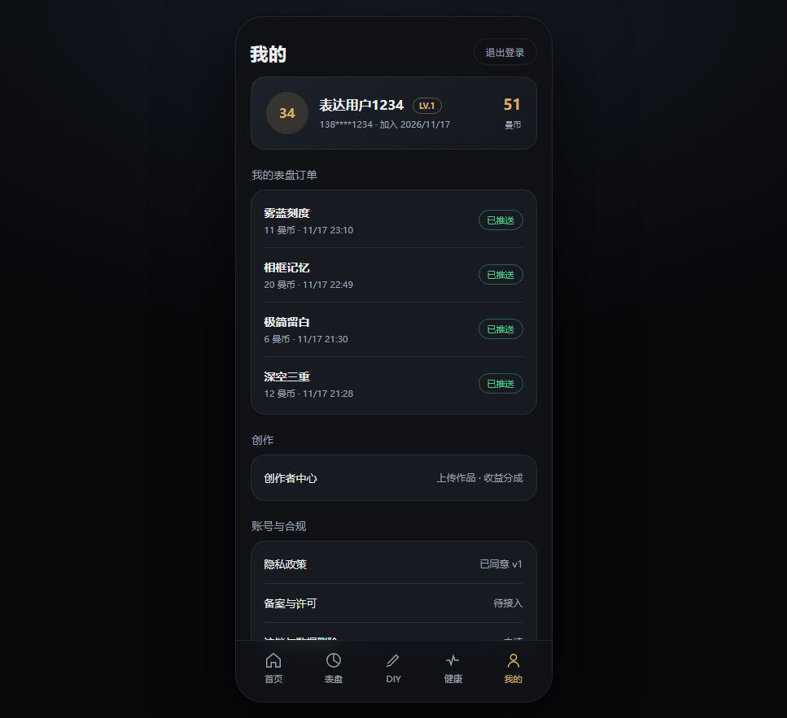

表达 · Biaoda Pro（智能手表伴侣）
面向智能手表场景从零设计的可运行、可扩展、可交付全栈应用 —— 不是静态 Demo，前后端一起跑就是一条完整业务闭环。
项目背景
参考主流智能手表伴侣产品的功能与交互，按现代工程体系从零设计。同一套前端代码可打包 Web / iOS / Android，原生能力通过 Capacitor 桥接；后端采用可替换的持久层，便于从 JSON 平滑迁移到 PG/MySQL。
技术栈
- 前端：Vue 3 + TypeScript + Pinia + Vue Router + Vite，Capacitor 提供 BLE 蓝牙、通知权限与后台常驻
- 后端：Node.js 20 + Express，JWT 鉴权，JSON 原子持久层（可替换为 PG/MySQL）
- 工程：Vite 代理、环境变量分环境、
node --watch开发热更、接口级单测
核心功能（真实接口闭环）
一条完整链路
- 手机号 + 短信验证码登录注册，JWT 签发与 401 自动拦截
- 表盘商城：14 个表盘、官方/创作者/收藏/我的分类、风格与排序筛选、搜索
- 下单扣币、虚拟币原子扣减、订单幂等、推送手表、退款全部走真实接口
- 健康数据（步数/心率/睡眠/血糖）按用户与日期归并上云，支持 7 天趋势
- 创作者中心：上传作品、收益分成；模拟设备模式由 Mock 驱动，生产切 BLE 插件无需改页面
工程亮点
- 设备驱动抽象：连接、同步、推送在 Mock 与 Capacitor BLE 之间可切换，页面层零改动
- 数据一致性：虚拟币扣减与订单写入做原子处理，防止并发超扣与重复下单
- 持久层可替换：JSON 原子落盘隔离在 store 层，接口不变即可切换关系型数据库
- 跨端一套代码：响应式手机式界面，Web 与原生壳共用组件与状态管理
界面展示





运行方式
1 | |
开发环境短信验证码通过 POST /api/auth/sms-code 响应中的 devCode 获取，无需真实短信通道。